Solution
On commence par remplir la partie gauche en partant du bas.
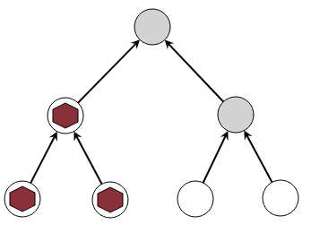On peut alors récupérer les deux cailloux du bas, pour remplir la partie droite.
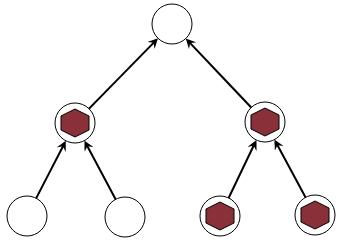On peut à nouveau récupérer les cailloux du bas, et placer un caillou tout en haut.
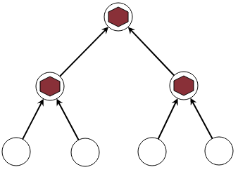On est obligé de commencer par remplir les 3 cercles qui pointent vers un même cercle. En effet, on n'a que 4 cailloux en tout, donc si on ne commence pas par là on ne pourra jamais le faire plus tard.
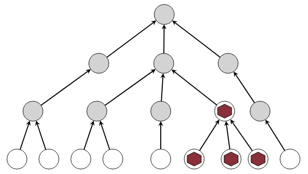Ensuite, on est obligé de tout faire pour pouvoir remplir dès que possible le cercle qui se trouve juste en-dessous de celui tout en haut, car ce cercle est lui aussi pointé par 3 flèches. On se concentre donc sur la partie centrale. Il faut attaquer par la gauche, car cela nécessite d'utiliser les 3 cailloux restants.
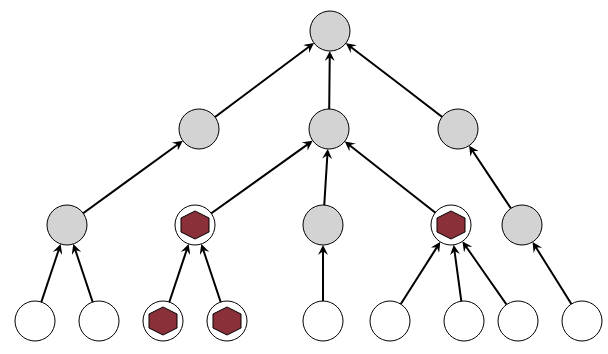On peut alors terminer la partie centrale.
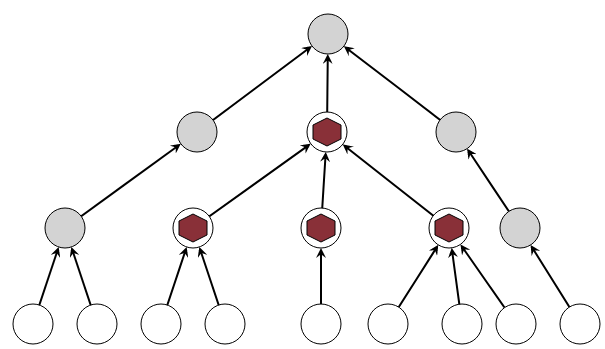Ensuite, on peut récupérer 3 cailloux et terminer facilement, en commençant par le bord gauche.
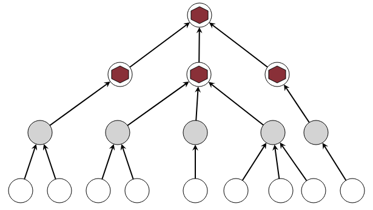Pour pouvoir placer un caillou sur le cercle en jaune ci-dessous en portant le nombre 1, il faut forcément disposer de 8 cailloux. Comme on n'a que 8 cailloux en tout, on est obligé de commencer par là tout au début.
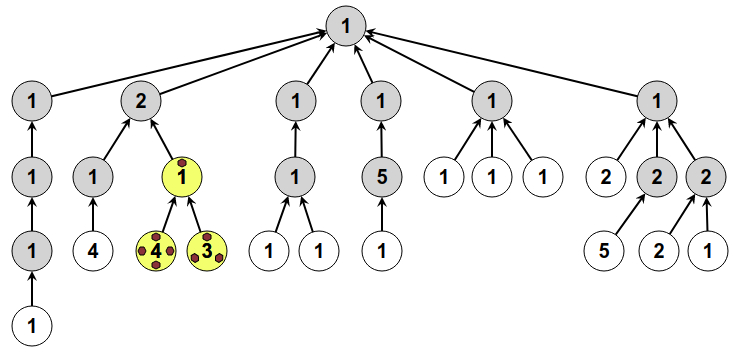On peut alors récupérer 7 cailloux. Il faut alors traiter l'endroit marqué en jaune ci-dessous, pour lequel on a également besoin de 7 cailloux.
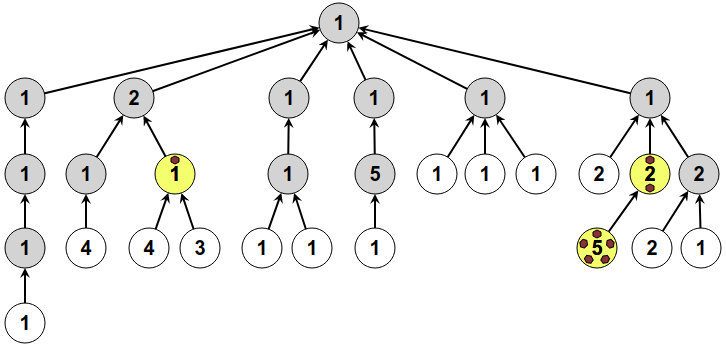De même, on est obligé au niveau du dessus d'utiliser 7 cailloux.
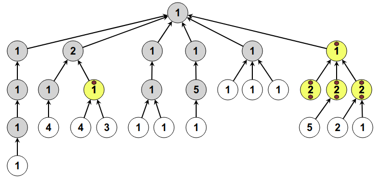On peut alors récupérer 6 cailloux, et les utiliser pour la partie qui nécessite exactement 6 cailloux.
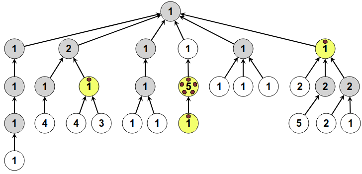On récupère 5 cailloux, et les utiliser pour la partie qui nécessite exactement 5 cailloux.

On récupère 4 cailloux, et les utiliser pour la partie qui nécessite exactement 4 cailloux.
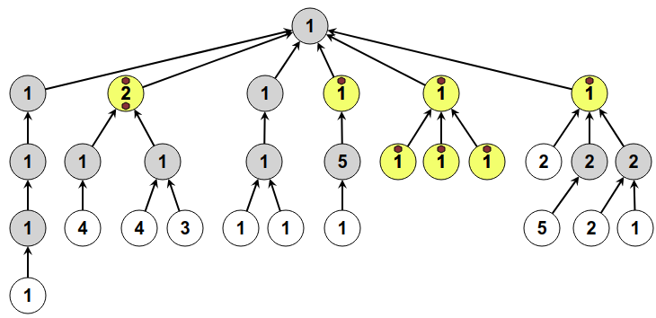Avec les 2 cailloux restants, on peut terminer.
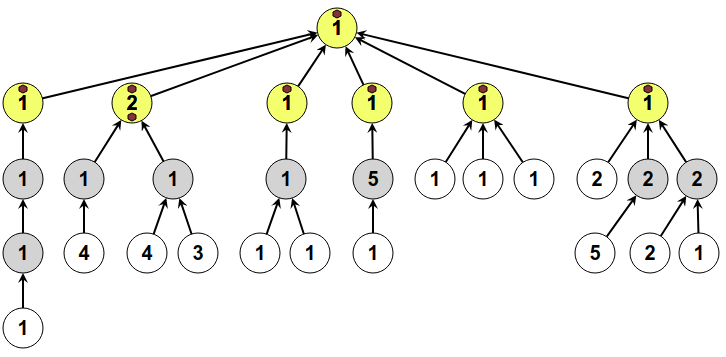C'est de l'informatique !
Ce sujet montre une structure organisée en arbre, en imaginant l'arbre dessiné à l'envers. La racine se trouve tout en haut, et les feuilles tout en bas. Au milieu, il y a des nœuds avec des branchements représentés par des flèches. Les structures d'arbres sont extrêmement utiles en informatique.
Le problème qui est posé sur cet arbre est inspiré du problème consistant à utiliser efficacement les registres d'un microprocesseur lors d'un calcul, par exemple l'évaluation d'une expression arithmétique. Une expression comme (3 - 4) × (1 + 2) peut en effet être représentée par un arbre, comme ceci :
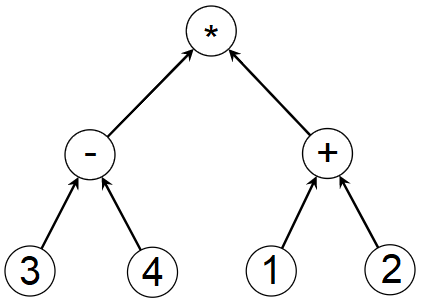Lors d'un calcul, les résultats intermédiaires doivent être stockés. Par exemple on commence par calculer 3 - 4, et on stocke le résultat -1, pendant que l'on s'occupe de calculer 1 + 2.
Les cailloux du sujet correspondent aux registres d'un microprocesseur : des zones de mémoire très rapides utilisées pour stocker les valeurs pendant les calculs. Lorsqu'il y a plus de valeurs à retenir que de registres disponibles, une mémoire beaucoup plus lente doit être utilisée pour stocker temporairement les valeurs, et les recharger plus tard au moment où elles seront réutilisées.
Comme pour les cailloux du sujet, choisir le bon ordre pour effectuer les calculs permet d'économiser le nombre de registres utilisés, donc de réduire le nombre d'écritures et lectures en mémoire, et accélérer le calcul. L'algorithme appliqué pour résoudre le sujet s'appelle l'algorithme de Sethi-Ullman.